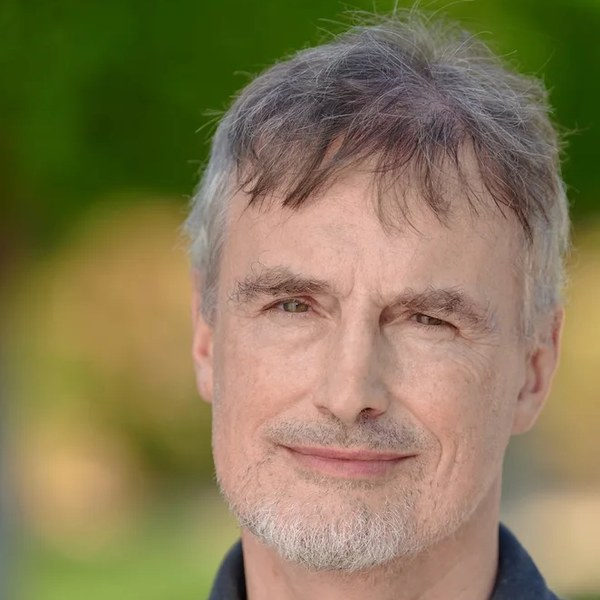

Predictive foundation models in the loop
How TabPFN-, Chronos- or RelBench-style models compose with dynamics and planning: as learned transition functions, as priors, or as the observational half of a causal model.
Proposal in preparation
Factories, grids, supply chains, fleets, clinical pathways: the systems we most want to plan in are recorded rather than filmed. WMSD is a one-day workshop at ICLR 2027 on world models for that kind of state. Models you can roll forward under an action you choose.
The workshop
World models are moving quickly: 306 arXiv papers in 2024, 794 in 2025, and 1,530 in the first eight months of 2026. Nearly all of them are about pixels and robots.
Meanwhile a second literature has been solving the other half. TabPFN, Chronos, TimesFM, Moirai, KumoRFM and RelBench established that one model can transfer across schemas, and they are very good at saying what happens next.
Nobody has worked out how the two halves fit together. That is the workshop. You can drop a predictive foundation model into a world model as the transition function, or as a prior, or as the observational half of a causal model, and people are starting to. What nobody has settled is what the action space is when the object is a database, or what does the job that a pixel grid does for free. Sometimes that is a foreign-key graph, sometimes a process topology, sometimes just where the sensors physically sit.
The structured-data corner is small, and it is where the growth is: of the 23 world-model papers that also mention time series, 13 are from 2026. We want work from both sides and from the middle. We would rather the two communities argue in one room than publish past each other.
Call for papers
How TabPFN-, Chronos- or RelBench-style models compose with dynamics and planning: as learned transition functions, as priors, or as the observational half of a causal model.
Models of relational, tabular, event-stream and telemetry state that take an action and predict a consequence.
Probing, representation analysis and failure modes of tabular and time-series foundation models. What transfers across schemas, and what does not.
Sufficiency, abstraction and identifiability when structure comes from a schema, a graph, a process topology or the real geometry of where the sensors sit, rather than from an image lattice.
Surrogate models, neural operators and digital twins for industrial process, energy systems, supply chains and scientific measurement. Rollout stability and long-horizon error.
Counterfactual protocols and benchmarks that can show a rollout is wrong, alongside the contamination and leakage problems structured-data foundation models already have.
Where a structured-data world model does not beat a tuned baseline or a domain simulator, and why.
Domain shift, reliability, privacy, regulation and inference budgets between the benchmark and the plant floor.
Work on tabular, time-series and relational foundation models is in scope whether or not it involves actions. Four pages, non-archival, double-blind on OpenReview, plus a short-paper track. Novelty is not required and negative results are welcome. Out of scope: embodied and visual world models, and clinical trial simulation.
Programme

Brown University
Lead author of A Cookbook of Self-Supervised Learning, and co-author with Yann LeCun on planning with JEPA latent dynamics models. Learnable signal processing for noisy, non-stationary time series.

Tenured researcher · CWI Amsterdam
Leads the Table Representation Learning Lab at CWI and is faculty in the ELLIS unit Amsterdam. Founded the Table Representation Learning workshop series at NeurIPS and ACL.

KAUST · IDSIA
Co-author of LSTM, and with David Ha of the 2018 World Models paper. Making the World Differentiable, his 1990 report, already had a controller network planning against a separate world model over abstract state, years before anyone pointed one at a camera. Directs the AI Initiative at KAUST and has led IDSIA since 1995.
To be announced
We are holding the last slot open.
The challenge
One task, released with the call for papers. Given logged state, action and outcome data from a real structured system, predict the outcome of an intervention that is absent from the logs. Scored on held-out interventions, not held-out time. No interventional benchmark exists today for relational or telemetry data.
A strong purely predictive model is a legitimate entry, and finding out how far one gets is part of the question. Enter as a team, or enter alone and we match you. Matching runs through February, on what you can contribute and when you are free, and every team spans at least two institutions. The leaderboard opens in March and closes when ICLR begins on 26 April; the winning team presents at the workshop. EUR 2,000 to the winning team.
Timeline
Dates before December are projected from the ICLR 2026 cycle and will be fixed once ICLR publishes its call for workshops. The ICLR 2027 venue has not yet been announced.
Committee

AI Scientist · Prior Labs
PhD student with Frank Hutter at the University of Freiburg. Core maintainer of TabArena, a living benchmark for tabular machine learning, and co-organiser of Foundation Models for Structured Data at ICML 2025 and 2026.

Postdoc · ETH Zurich
Works in the Sensory-Motor Systems Lab on learning from simulated interactions with world models, multimodal self-supervised learning for biosignals, and inductive bias in time-series pretraining.
Postdoc · ETH Zurich
Works with Andreas Krause in the Learning & Adaptive Systems group. PhD in the Prorok Lab at the University of Cambridge, supported by a DeepMind Scholarship. ICLR 2025 on optimistic Thompson sampling for model-based RL, where the agent plans against a dynamics model that knows what it does not know.

PhD student · Stanford University
Works on AI for science and leads Terminal-Bench-Science, a benchmark evaluating AI agents on real research workflows. Representation learning for time-domain high-energy astrophysics, including the discovery of a fast X-ray transient in the Chandra archive.
PhD student · Seoul National University
PhD candidate in industrial engineering and first author of MambaSL at ICLR 2026, a single-layer state space model for time-series classification. The paper re-runs 20 baselines across all 30 UEA datasets under one protocol and publishes a checkpoint for every one, because the existing numbers were not comparable enough to trust.
Head of Research · ETH Zurich · Forgis
Author of HEPA, a spotlight at FMSD @ ICML 2026, and of the SATURN scaling studies: two steps toward time series world models.
Guidance

Caltech
Bren Professor of Computing and Mathematical Sciences, and a member of the UN Secretary-General’s Scientific Advisory Board. Neural operators for learning the dynamics of physical systems, and their use as fast surrogates for numerical simulation. Previously senior director of AI research at NVIDIA.
Stanford University
Associate Professor of Computer Science, director of the Stanford Trustworthy AI Research lab, and a member of the NeurIPS Foundation board. Measurement science for AI evaluation, including the NeurIPS 2023 outstanding paper showing that emergent abilities are an artefact of the chosen metric. TIME100 AI, 2026.
To be announced
We are still adding advisors, particularly in causal and interventional dynamics.